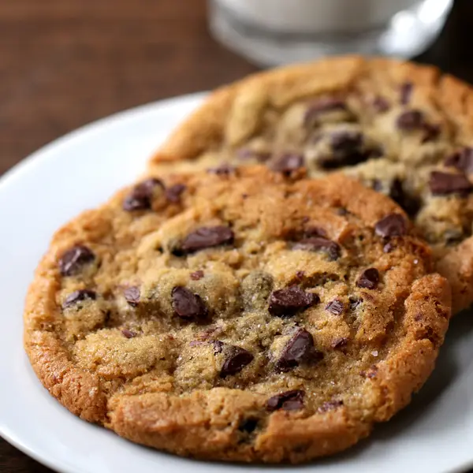

Chocolate Chip Cookies

Here's a delicious chocolate chip cookie recipe that is simple to follow and yields perfectly soft and chewy
cookies.
Ingredients
- 1 cup (226 g) salted butter, softened
- 1 cup (200 g) granulated sugar
- 1 cup (220 g) light brown sugar, packed
- 2 large eggs
- 2 teaspoons pure vanilla extract
- 3 cups (375 g) all-purpose flour
- 1 teaspoon baking soda
- ½ teaspoon baking powder
- 1 teaspoon sea salt
- 2 cups (340 g) chocolate chips (semi-sweet or a mix of your choice)
Instructions
- Preheat the Oven:
- Preheat your oven to 375°F (190°C). Line two or three baking sheets with parchment paper.
- Mix Dry Ingredients:
- In a medium bowl, whisk together the flour, baking soda, baking powder, and salt. Set aside.
- Cream Butter and Sugars:
- In a large mixing bowl, cream together the softened butter, granulated sugar, and brown sugar until the
mixture is light and fluffy.
- Add Eggs and Vanilla:
- Beat in the eggs one at a time, followed by the vanilla extract, mixing until well combined.
- Combine Mixtures:
- Gradually mix in the dry ingredients until just combined. Avoid overmixing.
- Add Chocolate Chips:
- Fold in the chocolate chips until evenly distributed throughout the dough.
- Shape Cookies:
- Using a cookie scoop or your hands, roll 2-3 tablespoons of dough into balls and place them on the prepared
baking sheets, leaving space between each cookie.
- Bake:
- Bake in the preheated oven for 8-10 minutes, or until the edges are lightly golden but the centers are still
soft.
- Cool:
- Allow the cookies to cool on the baking sheets for about 5 minutes before transferring them to a wire rack to
cool completely.
Tips
- For extra flavor, consider adding a sprinkle of flaky sea salt on top of the cookies before baking.
- If you prefer a thicker cookie, you can refrigerate the dough for about 30 minutes before baking.
Enjoy your freshly baked chocolate chip cookies! They are perfect for sharing or indulging on your own.